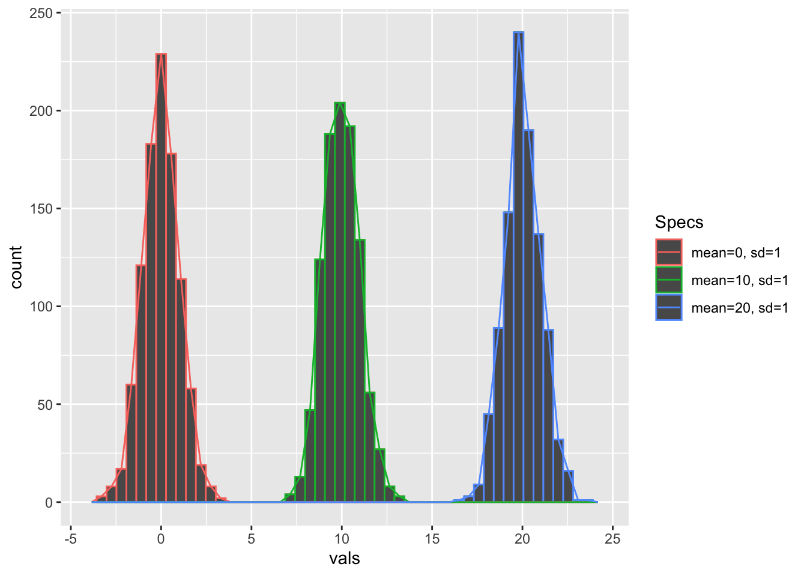
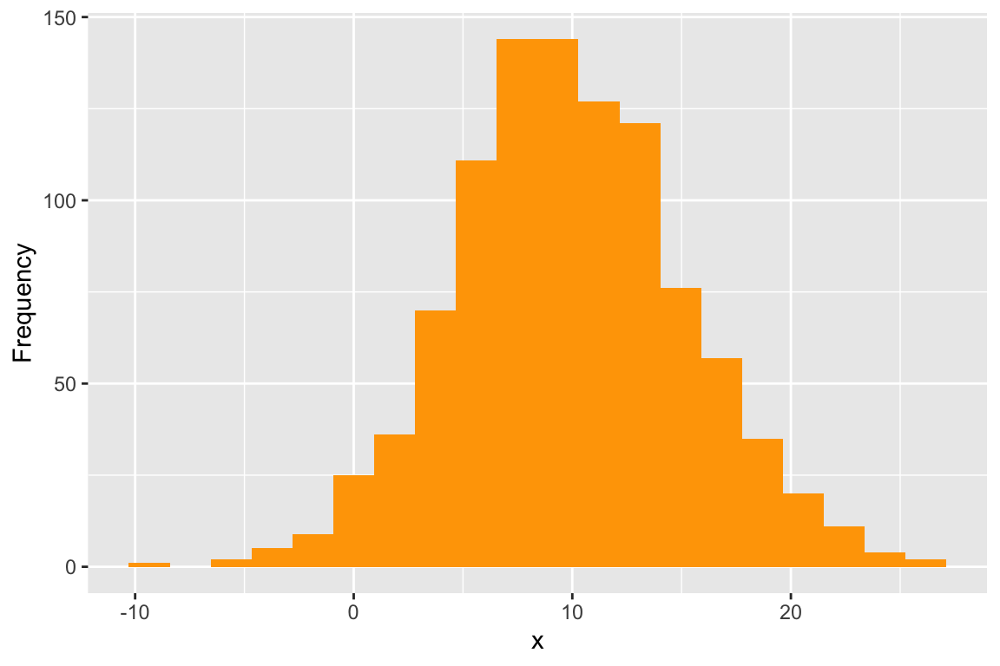
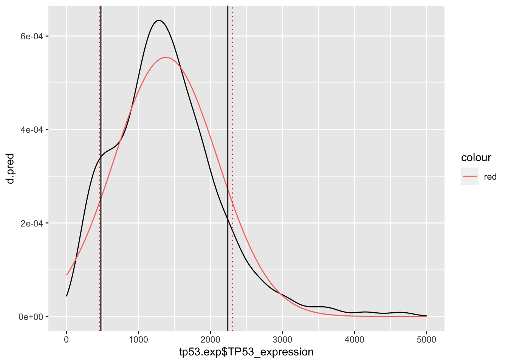
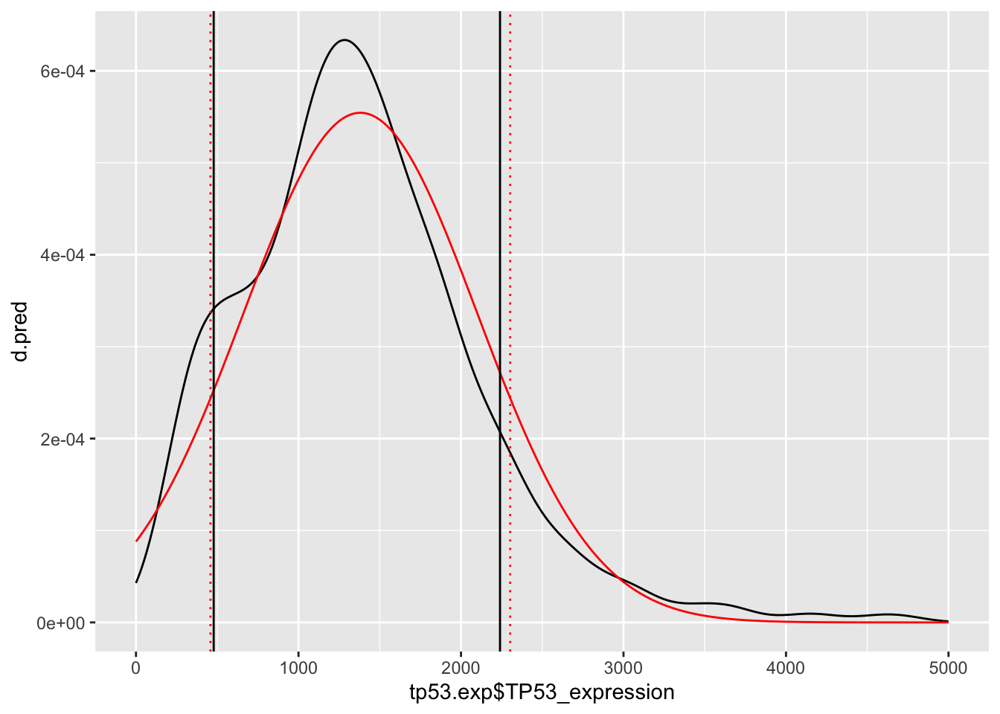
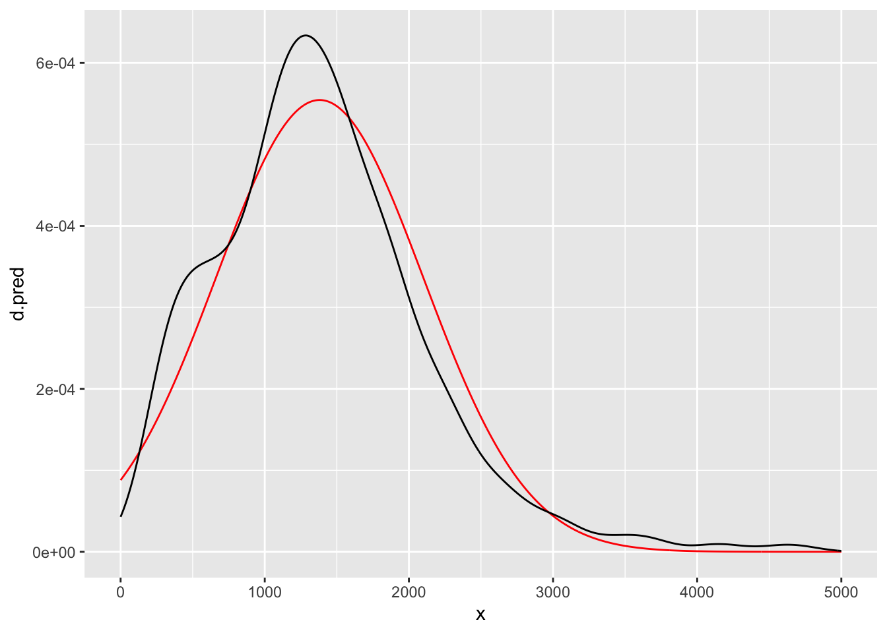
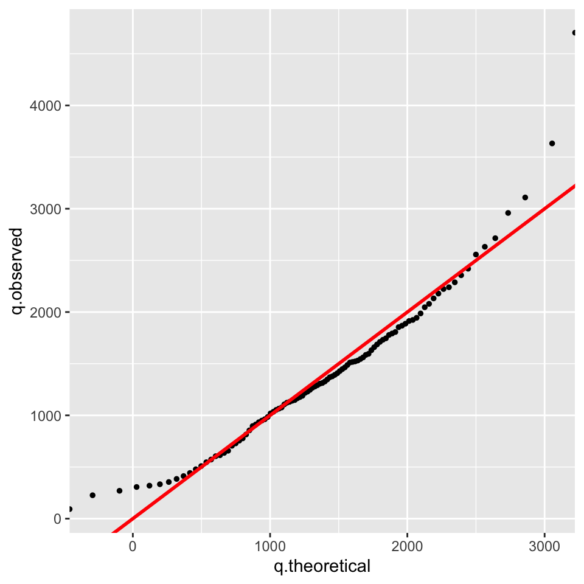

4 3. Normal/Gaussian distribution
The normal or the Gaussian distribution is given as:
\[P(x) = \frac{1}{{\sigma \sqrt {2\pi } }} \cdot e ^ \frac{-(x- \mu)^2}{{2\sigma ^2 }} \] where \(\mu\) is the mean of the distribution and \(\sigma\) is the standard deviation.
The standard normal distribution is a special case of normal distribution where the values for \(\mu = 0\) and \(\sigma = 1\). Thus, the above equation for the Normal distribution simplifies to:
\[P(x) = \frac{1}{{\sqrt {2\pi } }} \cdot e ^ \frac{-x^2}{2} \] Now for any \(x\) we can easily solve this equation since \(\pi\) and \(e\) are known constants.
4.0.1 3.1 Visualization
Let’s generate three random normal distributions with different means and standard deviations and visualize them together
## Use the function `dnorm()` to plot the density distribution
x = seq(-10, 30, by=.1)
d1 = dnorm(x, mean=0, sd=1)
d2 = dnorm(x, mean=10, sd=1)
d3 = dnorm(x, mean=20, sd=1)
# Compare with the histogram build from 1000 random number drawn from the standard normal distribution
r1 = rnorm(n=1000, mean=0, sd =1) # random distributions of values
r2 = rnorm(n=1000, mean=10, sd =1)
r3 = rnorm(n=1000, mean=20, sd =1)
# Histogram visualization
hist(r1,breaks=seq(-10,30,by=.5),probability = TRUE,ylim=c(0,.5),main="",xlab="")
hist(r2,breaks=seq(-10,30,by=.5),probability = TRUE,add=TRUE)
hist(r3,breaks=seq(-10,30,by=.5),probability = TRUE,add=TRUE)
# Line with the density distribution as above
lines(x,d1,col='red',type='l',lwd=2)
lines(x,d2,col='blue',lwd=2)
lines(x,d3,col='green',lwd=2)
Play with the mean and sd parameters and visualize the distributions (plain lines) as well as the corresponding histograms. What happens when you remove the parameter
probability=TRUEin the histogram function?
4.0.2 3.2 Application on a real dataset
Now we will use the Normal distribution to make predictions about gene expression of TP53 in lung cancer. TP53 is the most commonly mutated gene across multiple cancer types especially in lung cancers. We will read a table containing measurements of TP53 expression levels in 586 patients.
tp53.exp = read.table("https://www.dropbox.com/s/rwopdr8ycmdg8bd/TP53_expression_LungAdeno.txt?dl=1", header=T, sep="\t")[,1:2]
summary(tp53.exp)## Samples TP53_expression
## Length:586 Min. : 92.6
## Class :character 1st Qu.: 911.8
## Mode :character Median :1313.3
## Mean :1380.8
## 3rd Qu.:1778.1
## Max. :4703.9
## NA's :694.0.2.1 3.2.1 Data cleaning and central values
We will remove all the missing values and calculate the mean and standard deviation for the TP53 gene expression.
tp53.exp = tp53.exp[!is.na(tp53.exp$TP53_expression),] # ! means NOT. Here, only if is.na(xx) is TRUE, !is.na(xx) will be FALSE and not included.
m.tp53 = mean(tp53.exp$TP53_expression) # mean
s.tp53 = sd(tp53.exp$TP53_expression) # standard deviation
m.tp53;s.tp53## [1] 1380.822## [1] 719.59344.0.2.2 3.2.2 Modeling of the data using a normal distribution
Let’s see how well a normal distribution with \(\mu = 1380.822\) (m.tp53) and \(\sigma = 719.5934\) (s.tp53) can approximate the real distribution of TP53 expression. We assume that the population mean and standard deviation is similar as calculated above since we cannot measure the expression of TP53 in each and every lung cancer patient in the world.
# distribution of the measured data
plot(density(tp53.exp$TP53_expression), main ="", xlim=c(-1500, 6000),lwd=3)
# Make a normal distribution with the above parameters
x = seq(0,5000,by=5)
d.pred = dnorm(x, mean = m.tp53, sd = s.tp53)
# Now plot both, predicted and measured data
plot(density(tp53.exp$TP53_expression), main ="", xlim=c(-1500, 6000),lwd=3);lines(x,d.pred, col="red",lwd=3)
4.0.2.3 3.2.3 Data prediction using the model (normal distribution)
Using a normal distribution with \(\mu = 1380.822\) (m.tp53) and \(\sigma = 719.5934\) (s.tp53), we will ask the following questions -
– (Q1) What is the probability of observing the expression of TP53 to be less than 1000?
– (Q2) What is the probability of observing the expression of TP53 to be greater than 1000?
## [1] 0.2983271## [1] 0.7016729## [1] 0.70167294.0.2.4 3.2.4 Evaluating the quality of the predictions
Let’s check how good these predictions are compared to real data.
# Q1: What is the probability of observing the expression of TP53 to be **less** than 1000?
sum(tp53.exp$TP53_expression < 1000)/nrow(tp53.exp)## [1] 0.2978723# Q2: What is the probability of observing the expression of TP53 to be **greater** than 1000?
sum(tp53.exp$TP53_expression > 1000)/nrow(tp53.exp)## [1] 0.7021277I would say those predictions are pretty good !! Now, let’s try to break this model. Re-execute the code above with different \(q\) values
q=100, q=500, q=4000, q=4500etc. At what values do you think the model would not perform well. HINT: Look at the tails of the distribution!
# What is the probability of observing the expression of TP53 to be less than q?
q = c(100,500,1000,4000,4500)
# The function sapply() is used to calculate and store the predicted (a) and real (b) values
model_mat =sapply(q,function(x) {
a = pnorm(q=x, mean =m.tp53, sd = s.tp53)
b = sum(tp53.exp$TP53_expression < x)/nrow(tp53.exp)
return(c(a,b))
})
# Change into a dataframe and give row names
model_mat <- as.data.frame(model_mat,row.names = c("Predicted","Measured"))
# Set column names
colnames(model_mat) <- c("q=100", "q=500", "q=1000", "q=4000", "q=4500")
# Display the table (dataframe)
model_mat## q=100 q=500 q=1000 q=4000 q=4500
## Predicted 0.037544169 0.1104658 0.2983271 0.9998636 0.9999927
## Measured 0.001934236 0.1044487 0.2978723 0.9922631 0.9961315Again, using a normal distribution with \(\mu = 1380.822\) and \(\sigma = 719.5934\), what if we ask these kinds of questions:
# Q1: What is the value of TP53 expression at the 10% quantile?
qnorm(p = 0.1, mean = m.tp53, sd = s.tp53)## [1] 458.6258# Q2: What is the value of TP53 expression at the 90% quantile?
qnorm(p = 0.9, mean = m.tp53, sd = s.tp53)## [1] 2303.018Let’s check how good these predictions are compared to our real data.
## 10% 90%
## 478.2844 2240.1913Again the predictions are pretty good!
4.0.2.5 3.2.5 Graphical visualization
We can also visualize all of this on a simple graph:
# Model prediction:
x = seq(0,5000,by=5)
d.pred = dnorm(x,mean = m.tp53, sd = s.tp53)
# Model and measured data:
plot(density(tp53.exp$TP53_expression), main ="", xlim=c(-1500, 6000),lwd=3);lines(x,d.pred, col="red",lwd=3)
# Model and measured data and predicted versus measured 0.1 and 0.9 quantiles:
plot(density(tp53.exp$TP53_expression), main ="", xlim=c(-1500, 6000),lwd=3);lines(x,d.pred, col="red",lwd=3);abline(v=quantile(tp53.exp$TP53_expression, probs = c(0.1, 0.9)));abline(v= c(qnorm(p = 0.1, mean = m.tp53, sd = s.tp53), qnorm(p = 0.9, mean = m.tp53, sd = s.tp53)),lty=3,lwd=2,col='red')
Re-execute the code above with
p=0.25, p=0.5, p=0.75 etcand check how good the predictions are.
4.0.2.6 3.2.6 Graphical visualization using a Q-Q plot
Now, let’s plot the sample quantiles against theoretical quantiles to check the similarity between the two. This is called a quantile - quantile plot or a Q-Q plot, which you are familiar with (see Exercises Sheet 1).
q = seq(0,1,0.01) # Creating a vector of quantiles
# Find values corresponding to these quantiles in the real data
q.observed = quantile(tp53.exp$TP53_expression, probs = q)
# Find values corresponding to these quantiles in the theoretical normal distribution
q.theoretical = qnorm(p = q, mean = m.tp53, sd = s.tp53)
# Correlate the above two values
plot(x=q.theoretical, y=q.observed);abline(0,1,lty=1,lwd=2,col='red')